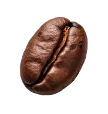
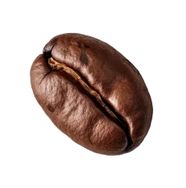
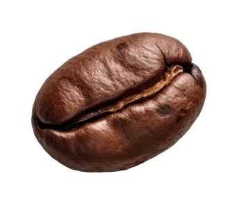
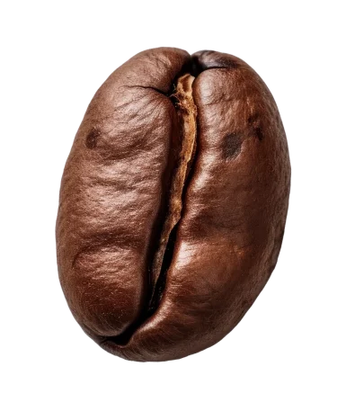
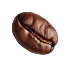
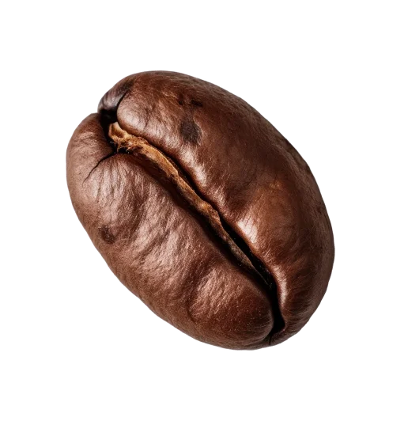
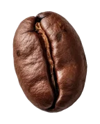
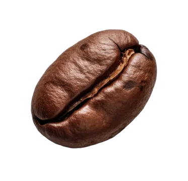
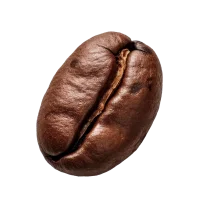

Authentic
Where
Beans
Meets Vibes
About US
STMP Café
is a premium specialty café created for one simple reason:
to give you an exceptional coffee experience—every single time.
Our first flagship branch in Zamalek sets the tone for what STMP stands for: carefully crafted coffee, refined design, and an atmosphere you’ll want to come back to.
Wherever you find STMP, whether in Egypt or the Gulf, you’ll always step into the same signature experience: the same quality, the same identity, and the same attention to detail that turns coffee into a ritual.
Our first flagship branch in Zamalek sets the tone for what STMP stands for: carefully crafted coffee, refined design, and an atmosphere you’ll want to come back to.
Wherever you find STMP, whether in Egypt or the Gulf, you’ll always step into the same signature experience: the same quality, the same identity, and the same attention to detail that turns coffee into a ritual.
Our Philosophy
At STMP, we believe great cafés are created at the point where everything comes together.
That means exceptional coffee, thoughtful design, seamless operations, and a human experience that feels effortless.
We choose to do less, but do it better: focusing on a refined selection crafted to the highest standards.
So no matter where you visit STMP, you’ll always find the same quality in your cup, the same care in the details, and the same atmosphere you trust.
Because at STMP, quality isn’t influenced by location, changing teams, or trends. It’s built into everything we do.
That means exceptional coffee, thoughtful design, seamless operations, and a human experience that feels effortless.
We choose to do less, but do it better: focusing on a refined selection crafted to the highest standards.
So no matter where you visit STMP, you’ll always find the same quality in your cup, the same care in the details, and the same atmosphere you trust.
Because at STMP, quality isn’t influenced by location, changing teams, or trends. It’s built into everything we do.









The Meaning
The Meaning
Behind STMP
STMP is inspired by the historical coffee stamp, a mark once used to identify and certify premium coffee harvests. Just as those stamps represented authenticity, traceability, and value, every STMP branch carries the same seal of excellence wherever it opens.
From the quality of the coffee and the consistency of service to the interior experience and overall brand feel, STMP applies one standard across everything it does, ensuring that every visit delivers the same trusted, refined specialty coffee experience.